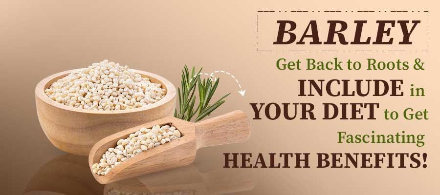

Barley
Types of Barley:
Hulled Barley:
Also Known As: Whole barley.
Description: Hulled barley has had only the outermost hull removed,
preserving
the bran and germ layers, making it more nutritious.
Uses: Used in soups, stews, and as a whole grain. It has a chewy texture
and
nutty flavor.
Growth Conditions: Thrives in temperate climates with moderate rainfall. It
is
adaptable to various soil types but prefers well-drained loamy soils.
Varieties: Includes six-row and two-row barley, which differ in the
arrangement
of the kernels on the head.
Pearled Barley:
Also Known As: Polished barley.
Description: Pearled barley has had the outer husk and bran layers removed
and
has been polished to a smooth finish. It is less nutritious than hulled barley but cooks
faster.
Uses: Commonly used in soups, salads, and as a side dish. It has a softer
texture
after cooking.
Growth Conditions: Requires similar conditions to hulled barley, thriving
in
temperate climates with moderate rainfall.
Characteristics: Pearled barley is versatile and can be used in a variety
of
recipes, offering a milder flavor compared to hulled barley.
Barley Flakes:
Also Known As: Flaked barley.
Description: Barley flakes are made by steaming and rolling barley grains,
similar to rolled oats.
Uses: Used in breakfast cereals, granolas, and baked goods. They are
quick-cooking
and have a light, chewy texture.
Growth Conditions: Barley flakes are processed from barley grains, so they
share
the same growth conditions.
Nutritional Value: Rich in dietary fiber and essential minerals, providing
a
nutritious addition to various dishes.
Barley Malt:
Also Known As: Malted barley.
Description: Barley malt is produced by soaking barley grains in water,
allowing them to germinate, and then drying them in a kiln.
Uses: Primarily used in brewing beer, distilling spirits, and as a
sweetener in
various foods. It has a distinct flavor profile.
Growth Conditions: Requires the same growing conditions as other barley
types.
Proper malting techniques are crucial for quality.
Nutritional Value: Barley malt retains many nutrients, including enzymes
that
aid in the brewing process.
Growing Conditions
Climate:
Temperature:
Germination Stage: Barley seeds require a soil temperature of around
12°C to 25°C for optimal germination. Low soil temperatures below 5°C can delay or
prevent germination, while temperatures above 30°C can adversely affect it.
Vegetative Growth Stage: During the vegetative phase, barley prefers
cool temperatures between 10°C and 24°C. This range supports optimal leaf development
and tillering (the production of side shoots that can become additional grain-producing
stems).
Reproductive Stage: As barley transitions from vegetative growth to
reproductive stages (heading, flowering, and grain filling), slightly warmer
temperatures (18°C to 24°C) are favorable. However, excessive heat, particularly
temperatures above 30°C during flowering, can lead to reduced pollination and grain
formation.
Harvest Stage: Warm and dry conditions are ideal during harvest, as
they help to ensure the barley grains are mature and reduce the moisture content. This
prevents fungal diseases and spoilage during storage.
Rainfall and Moisture:
Moderate Rainfall: Barley requires moderate rainfall, generally between
300mm to 900mm per growing season. Rainfall distribution should be well-timed to ensure
sufficient moisture during key growth stages, such as germination and early vegetative
growth.
Irrigation: In regions where rainfall is insufficient or irregular,
irrigation is crucial. It helps maintain adequate soil moisture, especially during
critical periods like tillering, flowering, and grain filling. Over-irrigation, however,
should be avoided to prevent waterlogging and root diseases.
Drought Resistance: Some barley varieties are bred for drought
resistance and can tolerate dry conditions better. These varieties are particularly
important in arid and semi-arid regions.
Sunlight:
Barley requires full sunlight for at least 6 to 8 hours a day. Adequate sunlight is
essential for photosynthesis, which drives plant growth and development.
Cloudy and
overcast conditions, especially during critical growth phases, can reduce photosynthetic
activity and, consequently, grain yield.
Humidity:
Barley prefers low to moderate humidity levels. High humidity can create favorable
conditions for fungal diseases such as rusts and blights, which can significantly impact
yield and quality.
Proper field management practices, like maintaining adequate
spacing between plants and timely application of fungicides, can help manage disease
pressure in high-humidity conditions
Wind:
Mild winds can aid in pollination by helping to distribute pollen. However, strong winds
can cause lodging, where the barley stalks fall over, making harvesting difficult and
reducing yield.
Windbreaks or shelterbelts can be used to protect barley fields
from strong winds, helping to maintain plant stability and health.
Soil:
Soil Type:
Loamy Soil: Barley thrives best in loamy soils, which are a
balanced mixture of sand, silt, and clay. These soils provide good drainage while
retaining enough moisture for optimal growth.
Clayey Soil: Clayey soils can also be suitable for barley, provided
they are well-drained to prevent waterlogging. These soils have good nutrient
retention but may require proper management to ensure good aeration.
Sandy Loam: Sandy loam soils, which are a mix of sand and loam, are
also favorable for barley cultivation. They offer good drainage and ease of root
penetration but may require additional organic matter to improve nutrient content.

Soil Structure:
Well-Drained: Barley requires well-drained soil to prevent
waterlogging, which can lead to root rot and other diseases. Soil with good drainage
ensures that excess water is efficiently removed.
Good Aeration: Proper soil aeration is essential for root
respiration and overall plant health. Well-aerated soils support vigorous root
growth and nutrient uptake.
Soil Fertility:
Nutrient-Rich: Barley grows best in fertile soils with adequate
levels of essential nutrients such as nitrogen (N), phosphorus (P), potassium (K),
and micronutrients (e.g., zinc, iron, copper).
Organic Matter: The presence of organic matter in the soil, such as
decomposed plant material or compost, enhances soil fertility by providing nutrients
and improving soil structure. Organic matter also supports beneficial soil
microorganisms.
Soil pH:
Optimal pH Range: Barley prefers a slightly acidic to neutral soil
pH, typically between 6.0 and 7.5. Soils outside this pH range may require
amendments to adjust the pH to an optimal level.
pH Management: Lime (calcium carbonate) can be added to acidic
soils to raise the pH, while sulfur or organic matter can be used to lower the pH of
alkaline soils.
Soil Preparation:
Plowing and Tilling: Proper soil preparation involves plowing and
tilling to create a fine seedbed. This helps to improve soil structure, eliminate
weeds, and incorporate organic matter or fertilizers.
Leveling: Leveling the field ensures uniform irrigation and
prevents waterlogging in low-lying areas. It also facilitates efficient planting and
crop management.
Soil Conservation:
Erosion Control: Practices such as contour plowing, terracing, and
maintaining ground cover help prevent soil erosion, which can deplete soil fertility
and structure.
Crop Rotation: Rotating barley with other crops, such as legumes,
can improve soil health by reducing the buildup of pests and diseases and enhancing
soil nutrient levels through nitrogen fixation.
Water Requirements:
General Water Needs:
Barley requires a total of approximately 300-500 millimeters (mm) of water throughout its growing season, depending on the variety, climate, and soil conditions.
Critical Growth Stages:
Germination: Adequate soil moisture is necessary for seed
germination and seedling establishment.
Tillering: Water is crucial during the tillering stage
(approximately 30-40 days after sowing) to promote the growth of additional tillers,
which can lead to higher yields.
Booting: Adequate moisture at the booting stage (about 50-60 days
after sowing) ensures proper head development.
Flowering and Grain Filling: Irrigation during the flowering and
grain filling stages (around 70-90 days after sowing) is vital for achieving good
grain size and weight.
Late Season: Reducing irrigation towards the end of the growing
season allows the soil to dry, facilitating harvesting and preventing lodging.
Drought and Stress Management:
Drought-Resistant Varieties: Plant drought-resistant barley
varieties in regions prone to water scarcity. These varieties are bred to withstand
periods of water stress.
Deficit Irrigation: Implement strategies where water is applied
during the most critical growth stages to manage water resources during drought
conditions.
Planting and Seeding:
Planting:
Barley can be sown either by broadcasting seeds or by using seed drills for more uniform planting. It is typically sown in the spring or fall, depending on the climate.
Seeding Rates:
The seeding rate varies but generally ranges from 100 to 150 kg per hectare, depending on the variety and planting method.
Nutritional Value:
Carbohydrates:
Barley is a rich source of carbohydrates, providing energy.
Fiber:
Barley products are high in dietary fiber, promoting digestive health.
Vitamins and Minerals:
Barley contains essential nutrients, including B vitamins, iron, and magnesium.
Uses:
Food:
Barley is used in soups, stews, and as a whole grain. It is also processed into products like barley flour and barley malt.
By-Products:
Barley straw is used for animal bedding, mulch, and bioenergy production.
Environmental Impact and Sustainability:
Barley is generally less water-intensive than many other crops, making it a relatively sustainable choice. Barley farming contributes to greenhouse gas emissions mainly through the use of fertilizers and machinery. Adopting sustainable practices such as crop rotation, conservation tillage, and the use of cover crops can help improve soil health and reduce environmental impact.